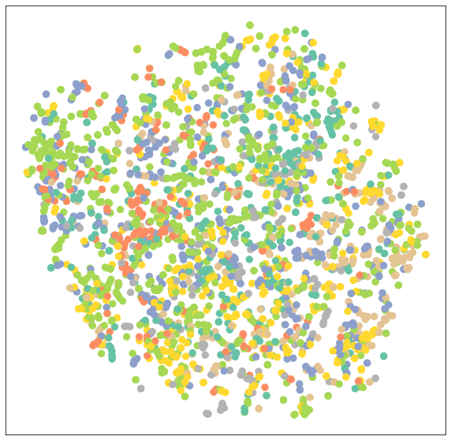

GNN tutorial 2
Node calssification with GNN (Cora dataset)
This tutorial will teach you how to apply Graph Neural Networks (GNNs) to the task of node classification. Here, we are given the ground-truth labels of only a small subset of nodes, and want to infer the labels for all the remaining nodes (transductive learning).
Data
To demonstrate, we make use of the Cora dataset, which is a citation network where nodes represent documents. Each node is described by a 1433-dimensional bag-of-words feature vector. Two documents are connected if there exists a citation link between them. The task is to infer the category of each document (7 in total).
This dataset was first introduced by Yang et al. (2016)1 as one of the datasets of the Planetoid benchmark suite. We again can make use PyTorch Geometric for an easy access to this dataset via torch_geometric.datasets.Planetoid2:
from torch_geometric.datasets import Planetoid
from torch_geometric.transforms import NormalizeFeatures
dataset = Planetoid(root='data/Planetoid', name='Cora', transform=NormalizeFeatures())
print()
print(f'Dataset: {dataset}:')
print('======================')
print(f'Number of graphs: {len(dataset)}')
print(f'Number of features: {dataset.num_features}')
print(f'Number of classes: {dataset.num_classes}')
Dataset: Cora():
======================
Number of graphs: 1
Number of features: 1433
Number of classes: 7data = dataset[0] # Get the first graph object.
print()
print(data)
print('===========================================================================================================')
Data(x=[2708, 1433], edge_index=[2, 10556], y=[2708], train_mask=[2708], val_mask=[2708], test_mask=[2708])
===========================================================================================================# Gather some statistics about the graph.
print(f'Number of nodes: {data.num_nodes}')
print(f'Number of edges: {data.num_edges}')
print(f'Average node degree: {data.num_edges / data.num_nodes:.2f}')
print(f'Number of training nodes: {data.train_mask.sum()}')
print(f'Training node label rate: {int(data.train_mask.sum()) / data.num_nodes:.2f}')
print(f'Has isolated nodes: {data.has_isolated_nodes()}')
print(f'Has self-loops: {data.has_self_loops()}')
print(f'Is undirected: {data.is_undirected()}')Number of nodes: 2708
Number of edges: 10556
Average node degree: 3.90
Number of training nodes: 140
Training node label rate: 0.05
Has isolated nodes: False
Has self-loops: False
Is undirected: True- 각 클래스 당 20개씩 정답을 알고 있음.
- training node label rate = \(5\%\)
this network is undirected, and that there exists no isolated nodes (each document has at least one citation).
(시도1 ) Training a Multi-layer Perception Network(MLP)
n theory, we should be able to infer the category of a document solely based on its content, i.e. its bag-of-words feature representation, without taking any relational information into account.
Let’s verify that by constructing a simple MLP that solely operates on input node features (using shared weights across all nodes):
class MLP(torch.nn.Module):
def __init__(self, hidden_channels):
super().__init__()
## 우리가 사용할 레이어 정의
torch.manual_seed(12345)
self.lin1 = Linear(dataset.num_features, hidden_channels)
self.lin2 = Linear(hidden_channels, dataset.num_classes)
## 레이어 정의 끝!
def forward(self, x):
## yhat을 어떻게 구할것인지 정의
x = self.lin1(x)
x = x.relu()
x = F.dropout(x, p=0.5, training=self.training)
x = self.lin2(x)
## 정의 끝!
return x
model = MLP(hidden_channels=16)
print(model)MLP(
(lin1): Linear(in_features=1433, out_features=16, bias=True)
(lin2): Linear(in_features=16, out_features=7, bias=True)
)def train():
model.train()
optimizr.zero_grad() # Clear gradients. <-- 앞에 나와도 상관없는건가??
out = model(data.x) # Perform a single forward pass.
loss = loss_fn(out[data.train_mask], data.y[data.train_mask]) # Compute the loss solely based on the training nodes.
loss.backward() # Derive gradients.
optimizr.step() # Update parameters based on gradients.
return loss
def test():
model.eval()
out = model(data.x)
pred = out.argmax(dim=1) # Use the class with highest probability.
test_correct = pred[data.test_mask] == data.y[data.test_mask] # Check against ground-truth labels.
test_acc = int(test_correct.sum()) / int(data.test_mask.sum()) # Derive ratio of correct predictions.
return test_acc
for epoch in range(1, 201):
loss = train()
print(f'Epoch: {epoch:03d}, Loss: {loss:.4f}')Epoch: 001, Loss: 1.9615
Epoch: 002, Loss: 1.9557
Epoch: 003, Loss: 1.9505
Epoch: 004, Loss: 1.9423
Epoch: 005, Loss: 1.9327
Epoch: 006, Loss: 1.9279
Epoch: 007, Loss: 1.9144
Epoch: 008, Loss: 1.9087
Epoch: 009, Loss: 1.9023
Epoch: 010, Loss: 1.8893
Epoch: 011, Loss: 1.8776
Epoch: 012, Loss: 1.8594
Epoch: 013, Loss: 1.8457
Epoch: 014, Loss: 1.8365
Epoch: 015, Loss: 1.8280
Epoch: 016, Loss: 1.7965
Epoch: 017, Loss: 1.7984
Epoch: 018, Loss: 1.7832
Epoch: 019, Loss: 1.7495
Epoch: 020, Loss: 1.7441
Epoch: 021, Loss: 1.7188
Epoch: 022, Loss: 1.7124
Epoch: 023, Loss: 1.6785
Epoch: 024, Loss: 1.6660
Epoch: 025, Loss: 1.6119
Epoch: 026, Loss: 1.6236
Epoch: 027, Loss: 1.5827
Epoch: 028, Loss: 1.5784
Epoch: 029, Loss: 1.5524
Epoch: 030, Loss: 1.5020
Epoch: 031, Loss: 1.5065
Epoch: 032, Loss: 1.4742
Epoch: 033, Loss: 1.4581
Epoch: 034, Loss: 1.4246
Epoch: 035, Loss: 1.4131
Epoch: 036, Loss: 1.4112
Epoch: 037, Loss: 1.3923
Epoch: 038, Loss: 1.3055
Epoch: 039, Loss: 1.2982
Epoch: 040, Loss: 1.2543
Epoch: 041, Loss: 1.2244
Epoch: 042, Loss: 1.2331
Epoch: 043, Loss: 1.1984
Epoch: 044, Loss: 1.1796
Epoch: 045, Loss: 1.1093
Epoch: 046, Loss: 1.1284
Epoch: 047, Loss: 1.1229
Epoch: 048, Loss: 1.0383
Epoch: 049, Loss: 1.0439
Epoch: 050, Loss: 1.0563
Epoch: 051, Loss: 0.9893
Epoch: 052, Loss: 1.0508
Epoch: 053, Loss: 0.9343
Epoch: 054, Loss: 0.9639
Epoch: 055, Loss: 0.8929
Epoch: 056, Loss: 0.8705
Epoch: 057, Loss: 0.9176
Epoch: 058, Loss: 0.9239
Epoch: 059, Loss: 0.8641
Epoch: 060, Loss: 0.8578
Epoch: 061, Loss: 0.7908
Epoch: 062, Loss: 0.7856
Epoch: 063, Loss: 0.7683
Epoch: 064, Loss: 0.7816
Epoch: 065, Loss: 0.7356
Epoch: 066, Loss: 0.6951
Epoch: 067, Loss: 0.7300
Epoch: 068, Loss: 0.6939
Epoch: 069, Loss: 0.7550
Epoch: 070, Loss: 0.6864
Epoch: 071, Loss: 0.7094
Epoch: 072, Loss: 0.7238
Epoch: 073, Loss: 0.7150
Epoch: 074, Loss: 0.6191
Epoch: 075, Loss: 0.6770
Epoch: 076, Loss: 0.6487
Epoch: 077, Loss: 0.6258
Epoch: 078, Loss: 0.5821
Epoch: 079, Loss: 0.5637
Epoch: 080, Loss: 0.6368
Epoch: 081, Loss: 0.6333
Epoch: 082, Loss: 0.6434
Epoch: 083, Loss: 0.5974
Epoch: 084, Loss: 0.6176
Epoch: 085, Loss: 0.5972
Epoch: 086, Loss: 0.4690
Epoch: 087, Loss: 0.6362
Epoch: 088, Loss: 0.6118
Epoch: 089, Loss: 0.5248
Epoch: 090, Loss: 0.5520
Epoch: 091, Loss: 0.6130
Epoch: 092, Loss: 0.5361
Epoch: 093, Loss: 0.5594
Epoch: 094, Loss: 0.5049
Epoch: 095, Loss: 0.5043
Epoch: 096, Loss: 0.5235
Epoch: 097, Loss: 0.5451
Epoch: 098, Loss: 0.5329
Epoch: 099, Loss: 0.5008
Epoch: 100, Loss: 0.5350
Epoch: 101, Loss: 0.5343
Epoch: 102, Loss: 0.5138
Epoch: 103, Loss: 0.5377
Epoch: 104, Loss: 0.5353
Epoch: 105, Loss: 0.5176
Epoch: 106, Loss: 0.5229
Epoch: 107, Loss: 0.4558
Epoch: 108, Loss: 0.4883
Epoch: 109, Loss: 0.4659
Epoch: 110, Loss: 0.4908
Epoch: 111, Loss: 0.4966
Epoch: 112, Loss: 0.4725
Epoch: 113, Loss: 0.4787
Epoch: 114, Loss: 0.4390
Epoch: 115, Loss: 0.4199
Epoch: 116, Loss: 0.4810
Epoch: 117, Loss: 0.4484
Epoch: 118, Loss: 0.5080
Epoch: 119, Loss: 0.4241
Epoch: 120, Loss: 0.4745
Epoch: 121, Loss: 0.4651
Epoch: 122, Loss: 0.4652
Epoch: 123, Loss: 0.5580
Epoch: 124, Loss: 0.4861
Epoch: 125, Loss: 0.4405
Epoch: 126, Loss: 0.4292
Epoch: 127, Loss: 0.4409
Epoch: 128, Loss: 0.3575
Epoch: 129, Loss: 0.4468
Epoch: 130, Loss: 0.4603
Epoch: 131, Loss: 0.4108
Epoch: 132, Loss: 0.4601
Epoch: 133, Loss: 0.4258
Epoch: 134, Loss: 0.3852
Epoch: 135, Loss: 0.4028
Epoch: 136, Loss: 0.4245
Epoch: 137, Loss: 0.4300
Epoch: 138, Loss: 0.4693
Epoch: 139, Loss: 0.4314
Epoch: 140, Loss: 0.4031
Epoch: 141, Loss: 0.4290
Epoch: 142, Loss: 0.4110
Epoch: 143, Loss: 0.3863
Epoch: 144, Loss: 0.4215
Epoch: 145, Loss: 0.4519
Epoch: 146, Loss: 0.3940
Epoch: 147, Loss: 0.4429
Epoch: 148, Loss: 0.3527
Epoch: 149, Loss: 0.4390
Epoch: 150, Loss: 0.4212
Epoch: 151, Loss: 0.4128
Epoch: 152, Loss: 0.3779
Epoch: 153, Loss: 0.4801
Epoch: 154, Loss: 0.4130
Epoch: 155, Loss: 0.3962
Epoch: 156, Loss: 0.4262
Epoch: 157, Loss: 0.4210
Epoch: 158, Loss: 0.4081
Epoch: 159, Loss: 0.4066
Epoch: 160, Loss: 0.3782
Epoch: 161, Loss: 0.3836
Epoch: 162, Loss: 0.4172
Epoch: 163, Loss: 0.3993
Epoch: 164, Loss: 0.4477
Epoch: 165, Loss: 0.3714
Epoch: 166, Loss: 0.3610
Epoch: 167, Loss: 0.4546
Epoch: 168, Loss: 0.4387
Epoch: 169, Loss: 0.3793
Epoch: 170, Loss: 0.3704
Epoch: 171, Loss: 0.4286
Epoch: 172, Loss: 0.4131
Epoch: 173, Loss: 0.3795
Epoch: 174, Loss: 0.4230
Epoch: 175, Loss: 0.4139
Epoch: 176, Loss: 0.3586
Epoch: 177, Loss: 0.3588
Epoch: 178, Loss: 0.3911
Epoch: 179, Loss: 0.3810
Epoch: 180, Loss: 0.4203
Epoch: 181, Loss: 0.3583
Epoch: 182, Loss: 0.3690
Epoch: 183, Loss: 0.4025
Epoch: 184, Loss: 0.3920
Epoch: 185, Loss: 0.4369
Epoch: 186, Loss: 0.4317
Epoch: 187, Loss: 0.4911
Epoch: 188, Loss: 0.3369
Epoch: 189, Loss: 0.4945
Epoch: 190, Loss: 0.3912
Epoch: 191, Loss: 0.3824
Epoch: 192, Loss: 0.3479
Epoch: 193, Loss: 0.3798
Epoch: 194, Loss: 0.3799
Epoch: 195, Loss: 0.4015
Epoch: 196, Loss: 0.3615
Epoch: 197, Loss: 0.3985
Epoch: 198, Loss: 0.4664
Epoch: 199, Loss: 0.3714
Epoch: 200, Loss: 0.3810Test Accuracy: 0.5900- MLP \(\to\) \(59\%\) test accuracy (성능이 별로임)
- 문제1 - 심각한 오버피팅때문에 성능이 안좋게 나오는 것. - 그렇다면 왜 오버피팅이 될까? \(\to\) 학습에 사용되는 training 노드수가 너무 작아 모르는 노드에 대해 일반화 하기 어렵다.
- 문제2 - MLP 모델은 중요한 bias가 반영이 안된다. (인용된 논문은 문서의 카테고리와 관련이 있을 가능성이 매우매우 높지만 이런것들이 반영이 안된다는 점)
Graph Neural Network를 사용해서 모델 성능을 높일수 있을 것 같다.
(시도2) Training a Graph Neural Network (GNN)
We can easily convert our MLP to a GNN by swapping the torch.nn.Linear layers with PyG’s GNN operators.
Following-up on the first part of this tutorial, we replace the linear layers by the GCNConv module. To recap, the GCN layer (Kipf et al. (2017)) is defined as
\[ \mathbf{x}_v^{(\ell + 1)} = \mathbf{W}^{(\ell + 1)} \sum_{w \in \mathcal{N}(v) \, \cup \, \{ v \}} \frac{1}{c_{w,v}} \cdot \mathbf{x}_w^{(\ell)} \]
- \(\bf{W}^{l+1}\) : a trainable weight matrix of shape of shape [num_output_features, num_input_features]
- \(c_{w,v}\): fixed normalization coefficient for each node.
in contrast, a single Linear layer is defined as
\[\bf{x}_v^{l+1} = \bf{W}^{l+1}\bf{x}_v^{l}\]
which does not make use of neighboring node information.
from torch_geometric.nn import GCNConv
class GCN(torch.nn.Module):
def __init__(self, hidden_channels):
super().__init__()
## 우리가 사용할 레이어 정의
torch.manual_seed(1234567)
self.conv1 = GCNConv(dataset.num_features, hidden_channels)
self.conv2 = GCNConv(hidden_channels, dataset.num_classes)
## 레이어 정의 끝!
def forward(self, x, edge_index):
## yhat을 어떻게 구할것인지 정의
x = self.conv1(x, edge_index)
x = x.relu()
x = F.dropout(x, p=0.5, training=self.training)
x = self.conv2(x, edge_index)
## 정의 끝!
return x
model = GCN(hidden_channels=16)
print(model)GCN(
(conv1): GCNConv(1433, 16)
(conv2): GCNConv(16, 7)
)- 학습전 GCN network의 노드임베딩 시각화
we make use of TSNE to embed our 7-dimensional node embeddings onto a 2D plane.
model = GCN(hidden_channels=16)
model.eval()
out = model(data.x, data.edge_index)
visualize(out, color=data.y)
We certainly can do better by training our model. The training and testing procedure is once again the same, but this time we make use of the node features x and the graph connectivity edge_index as input to our GCN model.
model = GCN(hidden_channels=16)
optimizr = torch.optim.Adam(model.parameters(), lr=0.01, weight_decay=5e-4)
loss_fn = torch.nn.CrossEntropyLoss()
def train():
model.train()
optimizr.zero_grad() # Clear gradients.
out = model(data.x, data.edge_index) # Perform a single forward pass.
loss = loss_fn(out[data.train_mask], data.y[data.train_mask]) # Compute the loss solely based on the training nodes.
loss.backward() # Derive gradients.
optimizr.step() # Update parameters based on gradients.
return loss
def test():
model.eval()
out = model(data.x, data.edge_index)
pred = out.argmax(dim=1) # Use the class with highest probability.
test_correct = pred[data.test_mask] == data.y[data.test_mask] # Check against ground-truth labels.
test_acc = int(test_correct.sum()) / int(data.test_mask.sum()) # Derive ratio of correct predictions.
return test_accEpoch: 001, Loss: 1.9463
Epoch: 002, Loss: 1.9409
Epoch: 003, Loss: 1.9343
Epoch: 004, Loss: 1.9275
Epoch: 005, Loss: 1.9181
Epoch: 006, Loss: 1.9086
Epoch: 007, Loss: 1.9015
Epoch: 008, Loss: 1.8933
Epoch: 009, Loss: 1.8808
Epoch: 010, Loss: 1.8685
Epoch: 011, Loss: 1.8598
Epoch: 012, Loss: 1.8482
Epoch: 013, Loss: 1.8290
Epoch: 014, Loss: 1.8233
Epoch: 015, Loss: 1.8057
Epoch: 016, Loss: 1.7966
Epoch: 017, Loss: 1.7825
Epoch: 018, Loss: 1.7617
Epoch: 019, Loss: 1.7491
Epoch: 020, Loss: 1.7310
Epoch: 021, Loss: 1.7147
Epoch: 022, Loss: 1.7056
Epoch: 023, Loss: 1.6954
Epoch: 024, Loss: 1.6697
Epoch: 025, Loss: 1.6538
Epoch: 026, Loss: 1.6312
Epoch: 027, Loss: 1.6161
Epoch: 028, Loss: 1.5899
Epoch: 029, Loss: 1.5711
Epoch: 030, Loss: 1.5576
Epoch: 031, Loss: 1.5393
Epoch: 032, Loss: 1.5137
Epoch: 033, Loss: 1.4948
Epoch: 034, Loss: 1.4913
Epoch: 035, Loss: 1.4698
Epoch: 036, Loss: 1.3998
Epoch: 037, Loss: 1.4041
Epoch: 038, Loss: 1.3761
Epoch: 039, Loss: 1.3631
Epoch: 040, Loss: 1.3258
Epoch: 041, Loss: 1.3030
Epoch: 042, Loss: 1.3119
Epoch: 043, Loss: 1.2519
Epoch: 044, Loss: 1.2530
Epoch: 045, Loss: 1.2492
Epoch: 046, Loss: 1.2205
Epoch: 047, Loss: 1.2037
Epoch: 048, Loss: 1.1571
Epoch: 049, Loss: 1.1700
Epoch: 050, Loss: 1.1296
Epoch: 051, Loss: 1.0860
Epoch: 052, Loss: 1.1080
Epoch: 053, Loss: 1.0564
Epoch: 054, Loss: 1.0157
Epoch: 055, Loss: 1.0362
Epoch: 056, Loss: 1.0328
Epoch: 057, Loss: 1.0058
Epoch: 058, Loss: 0.9865
Epoch: 059, Loss: 0.9667
Epoch: 060, Loss: 0.9741
Epoch: 061, Loss: 0.9769
Epoch: 062, Loss: 0.9122
Epoch: 063, Loss: 0.8993
Epoch: 064, Loss: 0.8769
Epoch: 065, Loss: 0.8575
Epoch: 066, Loss: 0.8897
Epoch: 067, Loss: 0.8312
Epoch: 068, Loss: 0.8262
Epoch: 069, Loss: 0.8511
Epoch: 070, Loss: 0.7711
Epoch: 071, Loss: 0.8012
Epoch: 072, Loss: 0.7529
Epoch: 073, Loss: 0.7525
Epoch: 074, Loss: 0.7689
Epoch: 075, Loss: 0.7553
Epoch: 076, Loss: 0.7032
Epoch: 077, Loss: 0.7326
Epoch: 078, Loss: 0.7122
Epoch: 079, Loss: 0.7090
Epoch: 080, Loss: 0.6755
Epoch: 081, Loss: 0.6666
Epoch: 082, Loss: 0.6679
Epoch: 083, Loss: 0.7037
Epoch: 084, Loss: 0.6752
Epoch: 085, Loss: 0.6266
Epoch: 086, Loss: 0.6564
Epoch: 087, Loss: 0.6266
Epoch: 088, Loss: 0.6411
Epoch: 089, Loss: 0.6226
Epoch: 090, Loss: 0.6535
Epoch: 091, Loss: 0.6317
Epoch: 092, Loss: 0.5741
Epoch: 093, Loss: 0.5572
Epoch: 094, Loss: 0.5710
Epoch: 095, Loss: 0.5816
Epoch: 096, Loss: 0.5745
Epoch: 097, Loss: 0.5547
Epoch: 098, Loss: 0.5989
Epoch: 099, Loss: 0.6021
Epoch: 100, Loss: 0.5799- GNN \(\to 81.5\%\) test accuracy!!!
There it is! By simply swapping the linear layers with GNN layers, we can reach 81.5% of test accuracy!
- 학습후 GCN network의 노드임베딩 시각화
- 카테고리별로 군집이 나눠진 느낌
Conclusion
In this chapter, you have seen how to apply GNNs to real-world problems, and, in particular, how they can effectively be used for boosting a model’s performance. In the next section, we will look into how GNNs can be used for the task of graph classification.